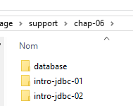
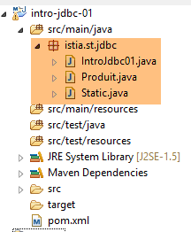

6. [Cours]: Inleiding tot API JDBC
Trefwoorden: relationele databases, API JDBC, SQLException.
6.1. Support
 |  |  |
De map [support / chap-06] bevat de Eclipse-projecten van dit hoofdstuk.
6.2. Architecture
 |
De laag JDBC (Java DataBase Connectivity) is een universele interface voor toegang tot databases. Deze biedt altijd dezelfde interface aan de laag [DAO]. Als u van SGBD overschakelt, hoeft u alleen de driver JDBC te wijzigen. De laag [DAO] blijft ongewijzigd.
6.3. De stappen bij het gebruik van een database
 |
In de bovenstaande architectuur omvat de exploitatie van een database door het consoleprogramma de volgende stappen:
- het laden van de driver JDBC van de database;
- het openen van een verbinding met de database;
- het uitvoeren van een opdracht SQL op de database en het verwerken van de resultaten van de opdracht SQL;
- de verbinding afsluiten;
Stap 1 hoeft slechts één keer te worden uitgevoerd. De stappen 2-4 worden herhaaldelijk uitgevoerd. Let op: er wordt geen verbinding open gelaten. Deze wordt gesloten zodra deze niet meer nodig is.
6.3.1. stap 1 - het laden van de driver JDBC in het geheugen
De code
// stuurprogramma laden JDBC
try {
Class.forName(nom de la classe du pilote JDBC);
} catch (ClassNotFoundException e1) {
// de uitzondering afhandelen
}
De bewerking op regel 3 heeft tot doel de driver JDBC uit de database in het geheugen te laden. Deze bewerking hoeft slechts één keer te worden uitgevoerd. Herhaling leidt echter niet tot een fout. Er wordt gezocht naar de klasse van de driver JDBC in het classpath van het project. Het is dus noodzakelijk dat in het Eclipse-project het bestand [jar], dat de klasse van de driver JDBC bevat, is opgenomen in het classpath van het project.
6.3.2. Stap 2 – Een verbinding openen
Zodra de driver JDBC is geïnstalleerd, wordt deze gevraagd een verbinding te openen met de BD:
De code
package spring.jdbc;
import java.sql.Connection;
import java.sql.DriverManager;
import java.sql.PreparedStatement;
import java.sql.ResultSet;
import java.sql.SQLException;
public class IntroJdbc01 {
...
Connection connexion = null;
PreparedStatement ps = null;
ResultSet rs = null;
try {
// verbinding openen
connexion = DriverManager.getConnection(url, user, passwd);
...
} catch (SQLException e1) {
// de uitzondering wordt verwerkt
...
} finally {
// verbinding sluiten
if (connexion != null) {
try {
connexion.close();
} catch (SQLException e2) {
// de uitzondering afhandelen
...
}
}
}
- regels 3-7: de implementatieklassen van de interface JDBC bevinden zich allemaal in het pakket [java.sql]. Bovendien genereren ze bij een fout allemaal een uitzondering van het type [SQLException] (regel 19, 27). Deze uitzondering is afgeleid van de klasse [Exception] en is een zogenaamde gecontroleerde uitzondering: men is verplicht een try/catch-blok te gebruiken om deze af te vangen, of als alternatief deze niet af te vangen en aan te geven dat de methode de uitzondering doorlaat door de signatuur van de methode aan te vullen met [throws SQLException];
- regel 17, [DriverManager.getConnection] is een statische methode die drie parameters verwacht:
- [url]: de URL uit de database. Dit is een tekenreeks die afhankelijk is van de gebruikte BD. Voor MySQL heeft deze de vorm [jdbc:mysql://localhost:3306/nom_de_la_bd];
- [user]: de eigenaar van de verbinding;
- [passwd]: zijn wachtwoord;
- regels 24-30: de verbinding moet in de clausule [finally] worden gesloten, zodat deze wordt gesloten, ongeacht of er een uitzondering optreedt of niet.
6.3.3. stap 3 - het verzenden van opdrachten SQL en [SELECT]
Zodra er een verbinding tot stand is gebracht, kunnen SQL-opdrachten worden verzonden. De manier waarop leesopdrachten [SELECT] worden afgehandeld, verschilt van die voor bijwerkingsoperaties [UPDATE, INSERT, DELETE]. We beginnen met de opdrachten SQL en [SELECT]:
De code
Connection connexion = null;
PreparedStatement ps = null;
ResultSet rs = null;
try {
// verbinding openen
connexion = DriverManager.getConnection(url, user, passwd);
// transactie starten
connexion.setAutoCommit(false);
// in alleen-lezenmodus
connexion.setReadOnly(true);
// de tabel [PRODUITS] wordt gelezen
ps = connexion.prepareStatement("SELECT ID, NOM, CATEGORIE, PRIX, DESCRIPTION FROM PRODUITS");
rs = ps.executeQuery();
System.out.println("Liste des produits : ");
while (rs.next()) {
System.out.println(new Produit(rs.getInt(1), rs.getString(2), rs.getInt(3), rs.getDouble(4), rs.getString(5)));
}
// transactie vastleggen
connexion.commit();
} catch (SQLException e1) {
// de uitzondering wordt afgehandeld
doCatchException(connexion,e1);
} finally {
// de finally-blok wordt verwerkt
doFinally(rs, ps, connexion);
}
private void doFinally(ResultSet rs, PreparedStatement ps, Connection connexion) {
....
}
- regels 8, 10: het openen van een transactie (regel 8) in de alleen-lezenmodus (regel 10). Een transactie is een reeks opdrachten SQL die ofwel allemaal slagen, ofwel allemaal mislukken. Dus in een transactie met N opdrachten SQL: als opdracht I+1 mislukt, worden de voorgaande I opdrachten geannuleerd. Voor een leesbewerking is een transactie niet nodig. Het aanmaken van een alleen-lezen-transactie kan echter bepaalde SGBD in staat stellen bepaalde optimalisaties door te voeren;
- regel 12: gebruik van een [PreparedStatement]. Een [PreparedStatement] heeft normaal gesproken parameters die worden aangeduid met het teken ?. Hier zijn die er niet. Een [PreparedStatement] is een opdracht die wordt voorbereid door de SGBD. Deze voorbereiding brengt kosten met zich mee en wordt slechts één keer uitgevoerd. Vervolgens wordt deze voorbereide opdracht uitgevoerd door de SGBD met verschillende effectieve parameters die de formele parameters ? zullen vervangen. Merk op dat het beter is om de gewenste kolommen te benoemen in plaats van de notatie * te gebruiken om alle kolommen op te halen. Door de namen van de kolommen te specificeren, kunnen we vervolgens hun waarden ophalen op basis van hun positie in de query SELECT;
- regel 13: uitvoering van [PreparedStatement]. We halen een object van het type [ResultSet] op;
Een object van het type [ResultSet] vertegenwoordigt een tabel, dat wil zeggen een verzameling rijen en kolommen. Op een bepaald moment heeft men slechts toegang tot één rij van de tabel, de zogenaamde huidige rij. Bij de eerste aanmaak van [ResultSet] is er geen huidige rij. Er moet een bewerking [ResultSet.next()] worden uitgevoerd om deze te verkrijgen. De signatuur van de methode next is als volgt:
Deze methode probeert door te gaan naar de volgende regel van de [ResultSet] en retourneert true als dit lukt, anders false. Als de bewerking slaagt, wordt de volgende regel de nieuwe huidige regel. De vorige regel gaat verloren en kan niet meer worden teruggehaald.
De tabel van [ResultSet] heeft kolommen met de namen labelCol1, labelCol2, ... zoals gespecificeerd in de uitgevoerde query [SELECT]. Met de query:
SELECT ID as myId, NOM as myNom, CATEGORIE as myCategorie, PRIX as myPrix, DESCRIPTION as myDescription FROM PRODUITS
- komt de kolom [ID] terecht in een kolom van [ResultSet] met de naam [myId];
- de kolom [NOM] wordt ondergebracht in een kolom van de tabel [ResultSet] met de naam [myNom];
- ...
Hierboven worden de identificatiecodes [myCol] kolomlabels genoemd. Zonder deze labels zijn de kolomnamen van de tabel [ResultSet] afhankelijk van de tabel SGBD. Wanneer het [SELECT] op één enkele tabel wordt uitgevoerd, zijn de kolomlabels standaard de kolomnamen die door het SELECT worden opgevraagd. Het probleem doet zich voor wanneer de [SELECT] op meerdere tabellen wordt uitgevoerd en er in deze tabellen identieke kolomnamen voorkomen, zoals in het volgende voorbeeld:
SELECT PRODUITS.NOM, CATEGORIES.NOM FROM PRODUITS, CATEGORIES WHERE PRODUITS.CATEGORIE_ID=CATEGORIES.ID
waarbij we aannemen dat de tabel [PRODUITS] een vreemde sleutel heeft naar de tabel [CATEGORIES], weergegeven door de relatie [Produits].CATEGORIE_ID --> [CATEGORIES].ID, en dat de tabellen [PRODUITS] en [CATEGORIES] beide een veld [NOM] hebben. In dit geval zijn de namen die in de tabel [ResultSet] aan de kolommen [PRODUITS.NOM] en [CATEGORIES.NOM] zijn gegeven, afhankelijk van de tabel SGBD. Voor de overdraagbaarheid tussen SGBD moeten hier dus kolomlabels worden gebruikt en schrijven we:
SELECT PRODUITS.NOM as p_NOM, CATEGORIES.NOM as c_NOM FROM PRODUITS, CATEGORIES WHERE PRODUITS.CATEGORIE_ID=CATEGORIES.ID
Om de verschillende velden van de huidige regel van [ResultSet] te benutten, zijn de volgende methoden beschikbaar:
om de kolom met de naam „labelColi” van de huidige regel op te halen en dus de kolom van het [SELECT]-record met dit label. Type verwijst naar het type van het veld coli. De volgende [getType]-methoden kunnen worden gebruikt: getInt, getLong, getString, getDouble, getFloat, getDate, ... In plaats van de kolomnaam te gebruiken, kan men de positie ervan in de uitgevoerde [SELECT]-query gebruiken:
waarbij i de index is van de gewenste kolom (i>=1).
- regels 15-17: ophalen van de waarden die zijn gelezen in de BD;
- regel 19: de transactie wordt gevalideerd (ook wel ‘committed’ genoemd). Hierdoor wordt de transactie beëindigd en worden de bronnen vrijgegeven die de transactie SGBD ervoor had gereserveerd;
- regel 25: de resources worden vrijgegeven in de [finally]. Deze roept de volgende methode [doFinally] aan:
private void doFinally(ResultSet rs, PreparedStatement ps, Connection connexion) {
// afsluiting ResultSet
if (rs != null) {
try {
rs.close();
} catch (SQLException e1) {
}
}
// afsluiten [PreparedStatement]
if (ps != null) {
try {
ps.close();
} catch (SQLException e2) {
}
}
if (connexion != null) {
try {
// verbinding verbreken
connexion.close();
} catch (SQLException e3) {
// de uitzondering afhandelen
}
}
}
- regels 3-9: afsluiting van [ResultSet];
- regels 11-17: afsluiting van [PreparedStatement];
- regels 18-27: verbinding verbreken;
Het afsluiten in de regels 3-17 lijkt overbodig, aangezien de verbinding in de regels 18-25 wordt afgesloten. In sommige gevallen is dit echter niet het geval en wordt aangeraden om ze te laten staan ([http://stackoverflow.com/questions/4507440/must-jdbc-resultsets-and-statements-be-closed-separately-although-the-connection]).
- regel 22: de uitzondering wordt afgehandeld door de volgende methode [doCatchException]:
private static void doCatchException(Connection connexion, Throwable th) {
// transactie annuleren
try {
if (connexion != null) {
connexion.rollback();
}
} catch (SQLException e2) {
// de uitzondering afhandelen
}
}
- regels 4-6: de transactie wordt geannuleerd. Hiermee wordt de transactie beëindigd en kan de methode SGBD de daarvoor ingezette bronnen vrijgeven;
6.3.4. stap 3 – verzending van opdrachten SQL [INSERT, UPDATE, DELETE]
De opdrachten SQL en [INSERT, UPDATE, DELETE] zijn bijwerkingsbewerkingen: ze wijzigen de database, maar leveren geen rijen op. De enige informatie die wordt geretourneerd, is het aantal rijen waarop de bijwerkingsbewerking betrekking heeft.
De code
Connection connexion = null;
PreparedStatement ps = null;
try {
// verbinding openen
connexion = DriverManager.getConnection(url, user, passwd);
// transactie starten
connexion.setAutoCommit(false);
// in lees-/schrijfmodus
connexion.setReadOnly(false);
// de tabel wordt bijgewerkt
ps = connexion.prepareStatement("UPDATE PRODUITS SET PRIX=PRIX*1.1 WHERE CATEGORIE=?");
// categorie 1
ps.setInt(1, 10);
// uitvoering
int nbLignes=ps.executeUpdate();
// transactie vastleggen
connexion.commit();
} catch (SQLException e1) {
// de uitzondering wordt afgehandeld
doCatchException(connexion, e1);
} finally {
// de finally-blok wordt verwerkt
doFinally(null, ps, connexion);
}
}
- regel 9: de verbinding wordt gebruikt voor zowel lezen als schrijven;
- regel 11: een [PreparedStatement] met 1 parameter (aangeduid met ?). Er kunnen meerdere parameters zijn. Deze worden genummerd vanaf 1;
- regel 13: de waarde wordt toegewezen aan de enige parameter. De eerste parameter van [setType] is de positie van de parameter in de [PreparedStatement] (1, 2, ...) en de tweede is de waarde die eraan wordt toegewezen. Men kan de methoden [setInt, setLong, setFloat, setDouble, setString, setDate, ...] gebruiken;
- regel 15: hier wordt de methode [executeUpdate] gebruikt en niet [executeQuery], die is gereserveerd voor opdrachten van het type SELECT. De methode retourneert het aantal regels dat door de bewerking is beïnvloed. Dit kan 0 zijn.
- regel 17: de transactie wordt gevalideerd;
6.3.5. stap 4 – het afsluiten van de verbinding
Een verbinding moet in een multi-user-omgeving zo snel mogelijk worden gesloten, omdat een SGBD slechts een beperkt aantal open verbindingen toestaat. In de voorgaande voorbeelden werd de verbinding gesloten in de clausule [finally] van de bewerkingen SQL, zodat deze altijd wordt gesloten, ongeacht of er een uitzondering is opgetreden of niet.
6.4. Een voorbeeldproject
6.4.1. Ondersteuning
 |
De map [support / chap5] bevat de Eclipse-projecten van dit hoofdstuk [1, 2]. De map [database] bevat het script SQL waarmee de voorbeelddatabase MySQL van dit hoofdstuk [1, 3] kan worden aangemaakt.
6.4.2. De gebruikte database
De volgende voorbeelden maken gebruik van de volgende database MySQL:
 |
- [ID]: primaire sleutel in de modus AUTO_INCREMENT (als er geen primaire sleutel wordt opgegeven, genereert SGBD deze);
- [NOM]: naam van een product – uniek;
- [CATEGORIE]: het categorienummer;
- [PRIX]: de prijs;
- [DESCRIPTION]: een beschrijving van het product;
We maken deze aan met de tool [WampServer] op de volgende manier: [1-9]:
 |
 |
 |
 |
6.4.3. Het Eclipse-project
 |
Het project is een Maven-project dat wordt gedefinieerd door het volgende bestand: [pom.xml]:
<project xmlns="http://maven.apache.org/POM/4.0.0" xmlns:xsi="http://www.w3.org/2001/XMLSchema-instance"
xsi:schemaLocation="http://maven.apache.org/POM/4.0.0 http://maven.apache.org/xsd/maven-4.0.0.xsd">
<modelVersion>4.0.0</modelVersion>
<groupId>istia.st.jdbc</groupId>
<artifactId>intro-jdbc-01</artifactId>
<version>0.0.1-SNAPSHOT</version>
<dependencies>
<dependency>
<groupId>mysql</groupId>
<artifactId>mysql-connector-java</artifactId>
<version>5.1.34</version>
</dependency>
<dependency>
<groupId>com.fasterxml.jackson.core</groupId>
<artifactId>jackson-databind</artifactId>
<version>2.5.1</version>
</dependency>
</dependencies>
</project>
- regels 8-12: de driver JDBC van SGBD MySQL5;
- regels 13-17: een bibliotheek die jSON (JavaScript Object Notation) kan verwerken (zie paragraaf 22.6). We gaan deze gebruiken om de producten uit de database in jSON-formaat weer te geven;
6.4.4. De productklasse
De klasse [Produit] ziet er als volgt uit:
package istia.st.jdbc;
import com.fasterxml.jackson.core.JsonProcessingException;
import com.fasterxml.jackson.databind.ObjectMapper;
public class Produit {
// velden
private int id;
private String nom;
private int categorie;
private double prix;
private String description;
// constructors
public Produit() {
}
public Produit(int id, String nom, int categorie, double prix, String description) {
this.id = id;
this.nom = nom;
this.categorie = categorie;
this.prix = prix;
this.description = description;
}
// getters en setters
...
// naar String
public String toString() {
try {
return new ObjectMapper().writeValueAsString(this);
} catch (JsonProcessingException e) {
e.printStackTrace();
return null;
}
}
}
- regel 34: we gebruiken de bibliotheek jSON om de tekenreeks jSON van het product weer te geven. Dit levert een weergave op die er ongeveer zo uitziet:
Liste des produits :
{"id":1,"nom":"NOM1","categorie":1,"prix":100.0,"description":"DESC1"}
{"id":2,"nom":"NOM2","categorie":1,"prix":101.0,"description":"DESC2"}
Het voordeel van de bovenstaande methode [toString] is dat, als er velden aan de klasse worden toegevoegd of verwijderd, de methode [toString] altijd geldig blijft. Bovendien, als de velden zelf objecten zijn (lijsten, arrays, woordenboeken, gebruikersobjecten), kunnen de bibliotheken jSON deze op hun beurt omzetten in een tekenreeks jSON;
6.4.5. De klasse [Static]
De klasse [Static] bundelt in methoden de code die vaak in de hoofdklasse wordt gebruikt:
package istia.st.jdbc;
import java.util.ArrayList;
import java.util.List;
public class Static {
public static List<String> getErreursFromThrowable(Throwable th) {
// de lijst met foutmeldingen van de uitzondering ophalen
List<String> erreurs = new ArrayList<String>();
while (th != null) {
// foutmelding van de throwable
erreurs.add(th.getMessage());
// we gaan naar de oorzaak van de throwable
th = th.getCause();
}
// resultaat
return erreurs;
}
public static void show(String title, List<String> messages){
// titel
System.out.println(String.format("%s : ",title));
// berichten
for(String message : messages){
System.out.println(String.format("- %s",message));
}
}
}
- regels 8-19: hiermee kan de lijst met fouten worden opgehaald, ingekapseld in een object van het type [Throwable], de bovenliggende klasse van de klasse [Exception];
- regels 21-28: geeft een lijst met berichten weer op het scherm;
Deze code zou in de hoofdklasse kunnen staan, omdat dit de enige klasse is die er gebruik van maakt. We hebben hier echter te maken met een breder scenario waarin ook andere klassen deze code nodig zouden hebben.
6.4.6. Het raamwerk van de hoofdklasse
package istia.st.jdbc;
import java.sql.Connection;
import java.sql.DriverManager;
import java.sql.PreparedStatement;
import java.sql.ResultSet;
import java.sql.SQLException;
public class IntroJdbc01 {
// constanten
final static String url = "jdbc:mysql://localhost:3306/dbIntroJdbc";
final static String user = "root";
final static String passwd = "";
final static String insert = "INSERT INTO PRODUITS(ID, NOM, CATEGORIE, PRIX, DESCRIPTION) VALUES (?, ?, ?, ?, ?)";
final static String delete = "DELETE FROM PRODUITS";
final static String select = "SELECT ID, NOM, CATEGORIE, PRIX, DESCRIPTION FROM PRODUITS";
final static String update = "UPDATE PRODUITS SET PRIX=PRIX*1.1 WHERE CATEGORIE=?";
final static String insert2 = "INSERT INTO PRODUITS(ID, NOM, CATEGORIE, PRIX, DESCRIPTION) VALUES (100,'X',1,1,'x')";
public static void main(String[] args) {
// het laden van de driver JDBC van MySQL
try {
Class.forName("com.mysql.jdbc.Driver");
} catch (ClassNotFoundException e1) {
doCatchException("Pilote JDBC introuvable", null, e1);
return;
}
// de tabel [PRODUITS] wordt geleegd
delete();
// de tabel wordt gevuld
insert();
// de tabel wordt gelezen
select();
// bijgewerkt
update();
// weergave
select();
// twee identieke elementen invoegen
// het invoegen moet mislukken en geen van beide elementen wordt ingevoegd vanwege de transactie
insert2();
// er wordt gecontroleerd
select();
// klaar
System.out.println("Travail terminé");
}
// productlijst
private static void select() {
...
}
// producten verwijderen
public static void delete() {
...
}
// producten toevoegen
public static void insert() {
...
}
// 2 producten toevoegen
public static void insert2() {
...
}
// bepaalde producten bijwerken
public static void update() {
..
}
private static void doFinally(ResultSet rs, PreparedStatement ps, Connection connexion) {
// sluiting ResultSet
if (rs != null) {
try {
rs.close();
} catch (SQLException e1) {
}
}
// afsluiten [PreparedStatement]
if (ps != null) {
try {
ps.close();
} catch (SQLException e2) {
}
}
// verbinding verbreken
if (connexion != null) {
try {
connexion.close();
} catch (SQLException e3) {
// foutmeldingen worden weergegeven
Static.show("Les erreurs suivantes se sont produites lors de la fermeture de la connexion",
Static.getErreursFromThrowable(e3));
}
}
}
private static void doCatchException(String title, Connection connexion, Throwable th) {
// foutmeldingen worden weergegeven
Static.show(title, Static.getErreursFromThrowable(th));
// transactie annuleren
try {
if (connexion != null) {
connexion.rollback();
}
} catch (SQLException e2) {
// foutmeldingen weergeven
Static.show(title, Static.getErreursFromThrowable(e2));
}
}
}
6.4.7. De inhoud van de producttabel verwijderen
De methode [delete] verwijdert de inhoud van de tabel:
// producten verwijderen
public static void delete() {
Connection connexion = null;
PreparedStatement ps = null;
try {
// verbinding openen
connexion = DriverManager.getConnection(url, user, passwd);
// transactie starten
connexion.setAutoCommit(false);
// de tabel [PRODUITS] wordt geleegd
ps = connexion.prepareStatement(delete);
ps.executeUpdate();
// transactie vastleggen
connexion.commit();
// terug naar standaardmodus
connexion.setAutoCommit(true);
} catch (SQLException e1) {
// de uitzondering wordt afgehandeld
doCatchException("Les erreurs suivantes se sont produites à la suppression du contenu de la table", connexion, e1);
} finally {
// de finally-blok wordt verwerkt
doFinally(null, null, connexion);
}
}
In dit voorbeeld wordt gebruikgemaakt van transacties. Met een transactie kunnen opdrachten SQL worden gebundeld, die allemaal moeten slagen of allemaal moeten worden geannuleerd. Er zijn vier bewerkingen die u moet kennen:
- een transactie starten: [connexion.setAutoCommit(false)];
- succesvolle afronding van een transactie: [connexion.commit()]. In dit geval worden alle bewerkingen die tijdens de transactie op BD zijn uitgevoerd, gevalideerd;
- einde van een mislukte transactie: [connexion.rollback()]. In dit geval worden alle bewerkingen die tijdens de transactie op BD zijn uitgevoerd, ongedaan gemaakt;
- terugkeer naar de modus [auto-commit], de standaardmodus van de API JDBC: [connexion.setAutoCommit(true)]. In deze modus wordt elke opdracht SQL als een transactie behandeld. Als er dus twee invoegingen worden uitgevoerd waarvan de tweede mislukt:
- in de modus [AutoCommit=true] blijft de eerste invoeging behouden (deze is gevalideerd door de eerste AutoCommit);
- in de modus [AutoCommit=false] wordt de eerste invoeging ongedaan gemaakt;
In onze voorbeelden breken we de transactie telkens wanneer er een uitzondering optreedt af in de methode [doCatchException]:
private static void doCatchException(String title, Connection connexion, Throwable th) {
// foutmeldingen weergeven
Static.show(title, Static.getErreursFromThrowable(th));
// transactie annuleren
try {
if (connexion != null) {
connexion.rollback();
}
} catch (SQLException e2) {
// foutmeldingen weergeven
Static.show("Erreur lors de l'annulation de la transaction", Static.getErreursFromThrowable(e2));
}
}
6.4.8. Aanmaken van de inhoud van de producttabel
De methode [insert] maakt de inhoud van de tabel aan:
// producten toevoegen
public static void insert() {
Connection connexion = null;
PreparedStatement ps = null;
try {
// verbinding openen
connexion = DriverManager.getConnection(url, user, passwd);
// transactie starten
connexion.setAutoCommit(false);
// de tabel wordt gevuld
ps = connexion.prepareStatement(insert);
for (int i = 0; i < 10; i++) {
// voorbereiding
int n = i + 1;
ps.setInt(1, n);
ps.setString(2, String.format("NOM%s", n));
ps.setInt(3, n / 5 + 1);
ps.setDouble(4, 100 * (1 + (double) i / 100));
ps.setString(5, String.format("DESC%s", n));
// uitvoering
ps.executeUpdate();
}
// transactie vastleggen
connexion.commit();
// terug naar de standaardmodus
connexion.setAutoCommit(true);
} catch (SQLException e1) {
// de uitzondering wordt afgehandeld
doCatchException("Les erreurs suivantes se sont produites à la création du contenu de la table", connexion, e1);
} finally {
// de finally-blok wordt verwerkt
doFinally(null, null, connexion);
}
}
6.4.9. Weergave van de inhoud van de producttabel
De methode [select] geeft de inhoud van de tabel weer:
// productlijst
private static void select() {
Connection connexion = null;
PreparedStatement ps = null;
ResultSet rs = null;
try {
// verbinding openen
connexion = DriverManager.getConnection(url, user, passwd);
// transactie starten
connexion.setAutoCommit(false);
// de tabel wordt gelezen [PRODUITS]
ps = connexion.prepareStatement(select);
rs = ps.executeQuery();
System.out.println("Liste des produits : ");
while (rs.next()) {
System.out.println(new Produit(rs.getInt(1), rs.getString(2), rs.getInt(3), rs.getDouble(4), rs.getString(5)));
}
// transactie vastleggen
connexion.commit();
// terug naar de standaardmodus
connexion.setAutoCommit(true);
} catch (SQLException e1) {
// de uitzondering wordt afgehandeld
doCatchException("Les erreurs suivantes se sont produites à la lecture de la table", connexion, e1);
} finally {
// de finally-blok wordt verwerkt
doFinally(null, null, connexion);
}
}
6.4.10. De inhoud van de tabel bijwerken
De methode [update] werkt bepaalde producten bij:
// bepaalde producten bijwerken
public static void update() {
Connection connexion = null;
PreparedStatement ps = null;
try {
// verbinding openen
connexion = DriverManager.getConnection(url, user, passwd);
// begin transactie
connexion.setAutoCommit(false);
// de tabel wordt bijgewerkt
ps = connexion.prepareStatement(update);
// categorie 1
ps.setInt(1, 1);
// uitvoering
ps.executeUpdate();
// transactie vastleggen
connexion.commit();
// terug naar standaardmodus
connexion.setAutoCommit(true);
} catch (SQLException e1) {
// de uitzondering wordt afgehandeld
doCatchException("Les erreurs suivantes se sont produites à la mise à jour du contenu de la table", connexion, e1);
} finally {
// de finally-blok wordt verwerkt
doFinally(null, null, connexion);
}
}
6.4.11. Rol van de transactie
De methode [insert2] voegt twee producten met dezelfde primaire sleutel toe aan de tabel, wat niet mogelijk is. Aangezien we ons in een transactie bevinden, wordt de eerste invoeging ongedaan gemaakt.
// toevoegin g van 2 producten met dezelfde primaire sleutels
public static void insert2() {
Connection connexion = null;
PreparedStatement ps = null;
try {
// verbinding openen
connexion = DriverManager.getConnection(url, user, passwd);
// transactie gestart
connexion.setAutoCommit(false);
// er wordt 1 rij toegevoegd
ps = connexion.prepareStatement(insert2);
// uitvoering
ps.executeUpdate();
// dezelfde regel wordt een tweede keer toegevoegd, dus met dezelfde primaire sleutel
// het invoegen moet mislukken en geen van beide elementen mag worden ingevoegd vanwege de transactie
ps.executeUpdate();
// transactie vastleggen
connexion.commit();
// terug naar de standaardmodus
connexion.setAutoCommit(true);
} catch (SQLException e1) {
// de uitzondering wordt afgehandeld
doCatchException("Les erreurs suivantes se sont produites lors de l'ajout", connexion, e1);
} finally {
// de finally-blok wordt verwerkt
doFinally(null, null, connexion);
}
}
6.4.12. Resultaten
De uitvoering van de methode [main] levert de volgende resultaten op:
6.5. Gebruik van een gegevensbron van het type [DataSource]
We gaan verder met de vorige toepassing en gebruiken daarbij een gegevensbron van het type [javax.sql.DataSource]:

We gaan een gegevensbron gebruiken die is geïmplementeerd door de klasse [org.apache.tomcat.jdbc.pool.DataSource]. Deze klasse maakt gebruik van een verbindingspool, d.w.z. een verzameling geopende verbindingen:
- wanneer de pool wordt geïnstantieerd, wordt een bepaald aantal verbindingen met de database geopend. Dit aantal is configureerbaar;
- wanneer de Java-code een verbinding opent, wordt deze geleverd door de pool;
- wanneer de Java-code een verbinding sluit, wordt deze teruggegeven aan de pool;
Uiteindelijk worden de verbindingen slechts één keer geopend, wat de prestaties bij het benaderen van de database verbetert. De gegevensbron wordt gedefinieerd in een Spring-configuratieklasse
6.5.1. Het Eclipse-project
 |
Het project is een Maven-project dat wordt gedefinieerd door het volgende bestand [pom.xml]:
<project xmlns="http://maven.apache.org/POM/4.0.0" xmlns:xsi="http://www.w3.org/2001/XMLSchema-instance"
xsi:schemaLocation="http://maven.apache.org/POM/4.0.0 http://maven.apache.org/xsd/maven-4.0.0.xsd">
<modelVersion>4.0.0</modelVersion>
<groupId>istia.st.jdbc</groupId>
<artifactId>intro-jdbc-02</artifactId>
<version>0.0.1-SNAPSHOT</version>
<dependencies>
<!-- MySQL -->
<dependency>
<groupId>mysql</groupId>
<artifactId>mysql-connector-java</artifactId>
<version>5.1.34</version>
</dependency>
<!-- bibliotheek jSON -->
<dependency>
<groupId>com.fasterxml.jackson.core</groupId>
<artifactId>jackson-databind</artifactId>
<version>2.5.1</version>
</dependency>
<!-- Spring -->
<dependency>
<groupId>org.springframework</groupId>
<artifactId>spring-context</artifactId>
<version>4.1.3.RELEASE</version>
</dependency>
<!-- Tomcat JDBC -->
<dependency>
<groupId>org.apache.tomcat</groupId>
<artifactId>tomcat-jdbc</artifactId>
<version>8.0.20</version>
</dependency>
</dependencies>
</project>
- regels 21-25: afhankelijkheid van Spring;
- regels 27-31: afhankelijkheid van de bibliotheek die de gegevensbron levert;
De Spring-configuratieklasse [AppConfig] ziet er als volgt uit:
package istia.st.jdbc;
import org.apache.tomcat.jdbc.pool.DataSource;
import org.springframework.context.annotation.Bean;
import org.springframework.context.annotation.Configuration;
@Configuration
public class AppConfig {
// constanten
final static String URL = "jdbc:mysql://localhost:3306/dbIntroJdbc";
final static String USER = "root";
final static String PASSWD = "";
final static String INSERT = "INSERT INTO PRODUITS(ID, NOM, CATEGORIE, PRIX, DESCRIPTION) VALUES (?, ?, ?, ?, ?)";
final static String DELETE = "DELETE FROM PRODUITS";
final static String SELECT = "SELECT ID, NOM, CATEGORIE, PRIX, DESCRIPTION FROM PRODUITS";
final static String UPDATE = "UPDATE PRODUITS SET PRIX=PRIX*1.1 WHERE CATEGORIE=?";
final static String INSERT2 = "INSERT INTO PRODUITS(ID, NOM, CATEGORIE, PRIX, DESCRIPTION) VALUES (100,'X',1,1,'x')";
final static String DRIVER_CLASSNAME = "com.mysql.jdbc.Driver";
@Bean
public DataSource dataSource() {
// gegevensbron TomcatJdbc
DataSource dataSource = new DataSource();
// toegangscontfiguratie JDBC
dataSource.setDriverClassName(DRIVER_CLASSNAME);
dataSource.setUsername(USER);
dataSource.setPassword(PASSWD);
dataSource.setUrl(URL);
// een aanvankelijk geopende verbinding
dataSource.setInitialSize(1);
// resultaat
return dataSource;
}
}
- regels 11-19: de constanten die eerder in [IntroJdbc01] waren gedefinieerd, zijn verplaatst naar [AppConfig];
- regels 31-34: de Spring-bean die de gegevensbron definieert;
- regel 24: aanmaken van de nog niet geconfigureerde gegevensbron;
- regels 26-29: de gegevens waarmee de gegevensbron verbinding kan maken met de database;
- regel 31: hier wordt een pool van 1 verbinding aangemaakt. Meer is hier niet nodig. Er zijn nooit meerdere gelijktijdige verbindingen;
6.5.2. De hoofdklasse
De hoofdklasse [IntroJdbc02] ziet er als volgt uit:
package istia.st.jdbc;
import java.sql.Connection;
import java.sql.PreparedStatement;
import java.sql.ResultSet;
import java.sql.SQLException;
import javax.sql.DataSource;
import org.springframework.context.annotation.AnnotationConfigApplicationContext;
public class IntroJdbc02 {
// gegevensbron
private static DataSource dataSource;
public static void main(String[] args) {
// ophalen van de Spring-context
AnnotationConfigApplicationContext ctx = new AnnotationConfigApplicationContext(AppConfig.class);
// het ophalen van de gegevensbron
dataSource = ctx.getBean(DataSource.class);
// de tabel [PRODUITS] wordt leeggemaakt
delete();
...
// klaar
ctx.close();
System.out.println("Travail terminé");
}
// productlijst
private static void select() {
Connection connexion = null;
PreparedStatement ps = null;
ResultSet rs = null;
try {
// verbinding openen
connexion = dataSource.getConnection();
// transactie starten
connexion.setAutoCommit(false);
...
} catch (SQLException e1) {
// de uitzondering wordt afgehandeld
doCatchException("Les erreurs suivantes se sont produites à la lecture de la table", connexion, e1);
} finally {
// de finally-blok wordt verwerkt
doFinally(null, null, connexion);
}
}
...
}
- regel 14: de gegevensbron. Merk op dat deze van het type [javax.sql.DataSource] is, wat een interface is;
- regel 18: instantiëren van de Spring-objecten;
- regel 20: het verkrijgen van een verwijzing naar de gegevensbron. Merk op dat de daadwerkelijk gebruikte klasse op geen enkel moment wordt genoemd. Hier wijst dus niets erop dat er een implementatie van het type [TomcatJdbc] wordt gebruikt;
- regel 36: het verkrijgen van een open verbinding;
- de rest van de code is identiek aan die van de klasse [IntroJdbc01];
6.6. Conclusion
Meer informatie over databasebeheer is te vinden in het document [Exploiter une base relationnelle avec l'écosystème Spring].